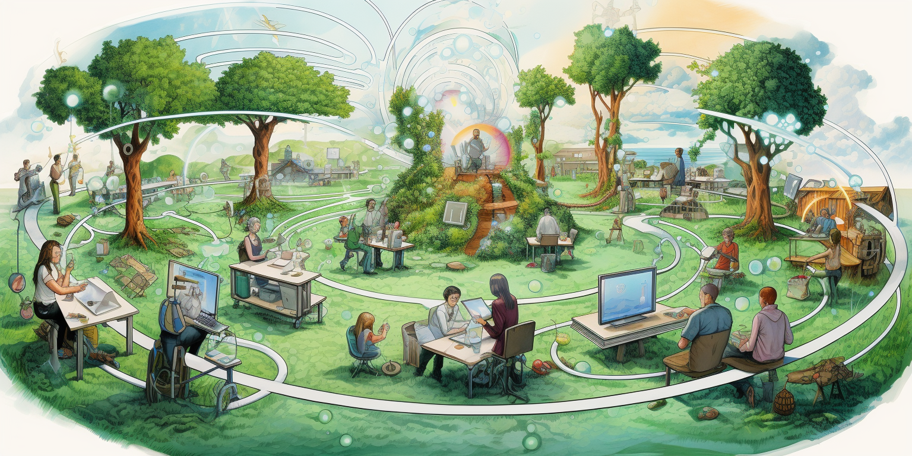

Decentralization

Table of Contents
Introduction
Decentralization, in our view, isn't solely about employing blockchain technology everywhere. Instead, we envision it as the culmination of a global community collaborating transparently, sharing everything they do, and actively seeking feedback. Our goal is to ensure that the platform we deploy operates in the most distributed and decentralized manner possible.
V3.11
| Description | Good Enough (1) | Remark |
|---|---|---|
| 3Nodes owned and invested by Independent Farmers | Yes | less than 10% owned by ThreeFold Cloud/Dubai |
| open documentation & feedback | Yes | all opensource on github, anyone can contribute and give feedback, whcih does happen quite well |
| transparancy and input on any change to do with tokenomics | Yes | see the discussions on forum (3) and GEP's process |
| transparancy about tokens, history | Yes | see wiki (2) which is also on github, a lot of info |
| TFChain deployment | No | too few run the validator stack, we need more validators |
| Code Development | No | +90% done by TFTech , we need more participants |
| Funding For Tech Creation & TFGrid Promotion | No | +- all done by TFTech and TF Cloud , we need more participants to make this community owned |
| input on testing cycle & collaboration | Yes | We have a testnet on which everyone can contribute |
| quality and transparancy of code | Yes | all is on github (4), everyone can review, comment |
| input on process & roadmap for code development | Yes | all is on github (4), everyone can review, comment |
| tracking of available compute, storage, network capacity | Yes | all is tracked on blockchain TFChain (farming) |
| tracking of used compute, storage, network capacity | Yes | all is tracked on blockchain TFChain (utilization) |
| minting of tokens (farming) | Yes | code uses the information on blockchain and creates minting report |
| verification of minting of tokens (farming) | Yes | minting reports checked by guardians (5) and hash kept on blockchain when doing the minting |
| the actual minting | Yes | multisignature of guardians is needed to valudate the transactions, each minting links back to report |
| its possible for super smart hackers to fake capacity | No | probably yes on non certified nodes, yes but not easy (6) |
| are all components redundant and distributed enough | No | e.g. TF Hub, TF Proxy, do note this does not weaken security, only reliability (7) |
- (1) This is our subjective evaluation and should not be construed as a guarantee or commitment. We welcome any differing opinions or feedback.
- (2) The wiki
- (3) The forum
- (4) Github, list of components see here
- (5) there are 9 Guardians, 6 need to approve (TODO, double check)
- (6) they would have to re-engineer how ZOS works and tells TFChain, but human chain = guardians can still see, we are planning to make this 100x more difficult in V4.0. If a hacker succeeds they would basically receive tokens which are not really earned. This is probably not possible on certified node, because of silicon route of trust with protected bios.
- (7) TF Cloud is operating a kubernetes cluster to run some of these services. In v3.13 we expect more farmers to run this independently
V4.x
With V4.x, we aim at the first 100% independent grid deployment.
mid to end 2024
- Run Independently means
- less than 20% of the validators or other tech components should be managed by TFTech or TFCloud
- less than 20% of the guardians are linked to TFTech or TFCloud
- guardians will have to decide on upgrades of 3nodes linked to their regional internet
- Anyone community in the world can run their own regional Internet without any help of TFCloud/TFTech.
- This basically means if TFTech and TFCloud would no longer exist and community has interest to keep on funding the project, then the project can continue by itself.
Following features make sure the grid can get to full independance.
- peer2peer billing & payment
- peer2peer deployments
- peer2peer farmering cooperative (group farmers to become more effective)
- compatibility with major money blockchains